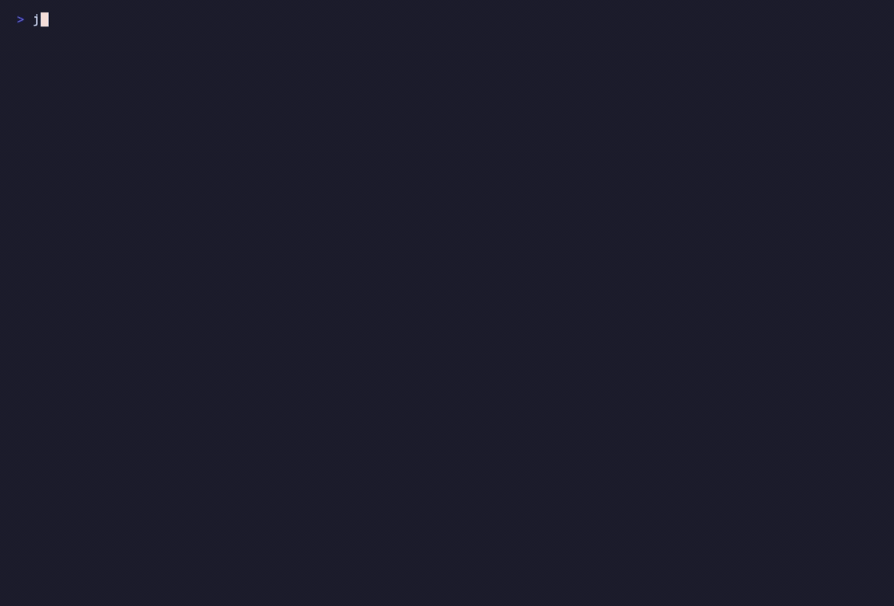

jeonse-guard
주소 한 줄로 전세 안전진단
계약 전엔 30초 안전진단 리포트, 계약 후엔 매일 아침 보증금 워치독.
전부 무료 공공데이터로, 로그인 없이.

$ jeonse-guard scan "서울 마포구 성산동 200-1" --name 성산시영 --area 50 --deposit 30000 # 전세 안전진단 리포트 — 서울 마포구 성산동 200-1 | 항목 | 내용 | | --------------- | ------------------------------------------ | | 대장 주용도 | 제1종근린생활시설 | | 매매 중위가 | 122,750만원 (표본 98건 · 12/12개월 수집) | | 전세가율 | 30,000만원 ÷ 122,750만원 = 24.4% | ## 검토 신호 - [warn] 건축물대장 용도에 근린생활시설 포함 근거: 대장 주용도 원문 '제1종근린생활시설' ## 직접 확인 체크리스트 (자동 조회 불가) - [ ] 등기부등본 근저당 · 선순위보증금 · 전입세대 열람 … [요약] 검토 신호 1건 (warn 1건)
실제 실행 장면(위)과 결과 요약(아래) — 서울 마포구의 한 주소를 진단하자 전세가율 산출과 함께 근린생활시설 경고가 발화됐습니다. 실행 영상은 GitHub README에서 볼 수 있습니다.
왜 만들었나
주변에 전세사기를 당한 친구가 있습니다. 사고가 난 뒤 되짚어보니, 계약 전에 확인할 수 있었던 신호들이 분명히 있었습니다.
전세 계약 전에 확인해야 할 정보는 사실 전부 공개돼 있습니다. 문제는 그 정보가 여러 사이트에 흩어져 있고, 용어가 어렵고, 애초에 뭘 봐야 하는지 모른다는 것입니다.
흩어져 있다
실거래가는 국토부, 건물 용도는 정부24, 권리관계는 등기소 — 사이트가 전부 다릅니다.
용어가 어렵다
전세가율, 근린생활시설, 선순위보증금… 처음 계약하는 사람에게는 외국어입니다.
뭘 봐야 하는지 모른다
가장 무서운 건 "확인 안 한 것이 있는 줄도 몰랐다"는 상황입니다.
미리 확인만 제대로 해도 막을 수 있는 일이라면, 그 확인을 AI가 대신해주면 어떨까? 그래서 주소 한 줄만 넣으면 공공데이터를 교차 조회해 30초 만에 안전진단 리포트를 만들어주는 도구를 만들었습니다.
무엇을 확인해주나
전세가율
보증금 ÷ 집의 실제 매매가. 80%를 넘으면 집이 경매로 넘어가도 보증금을 다 돌려받지 못할 수 있습니다. 최근 12개월 실거래에서 같은 단지·비슷한 면적만 골라 계산합니다.
건물의 진짜 정체
건축물대장의 용도가 "주택"이 아니라 "근린생활시설"(상가)인 건물이 있습니다. 겉보기엔 빌라인데 서류상 상가라 보증보험 가입이 막힐 수 있습니다.
직접 확인 체크리스트
등기부 근저당, 선순위보증금, 전입세대 열람처럼 자동 조회가 불가능한 항목은 정직하게 "직접 확인하세요" 목록으로 안내합니다.
실제 사례 — 데모 주소(마포구 성산동 200-1)는 전세가율이 24.4%로 아주 낮아 겉보기엔 문제가 없었습니다. 그런데 건축물대장을 떼보니 주용도가 "제1종근린생활시설". 아파트 단지 바로 옆 근생 건물이었습니다.
"수치가 좋아 보여도 대장까지 확인해야 하는 이유"를 도구가 실데이터로 증명한 순간입니다.
판정 철학 — 이 도구는 절대 "안전합니다"라고 말하지 않습니다. 사실(수치+출처) → 근거 있는 검토 신호 → 체크리스트의 3층 구조만 보여줍니다. 전세사기 도구에서 가장 위험한 것은 잘못된 안심이기 때문입니다.
어떻게 굴러가나
jeonse-guard에는 사람이 지켜보지 않아도 알아서 도는 자동 루프가 두 개 있습니다.
① 계약 전 — 원샷 진단 파이프라인 (약 30초)
flowchart LR
A["주소 입력"] --> B["주소 확정
카카오 지오코딩"]
B --> C["실거래 수집
매매·전월세 12개월"]
C --> D["전세가율 산출
내 단지·면적대 매칭"]
D --> E["건축물대장
근생 감지"]
E --> F["검토 신호 평가"]
F --> G["리포트 발행"]
핵심 설계는 실패 강등입니다. 어느 한 단계가 실패해도(예: 대장 API 오류) 전체가 죽지 않고, 그 항목만 "확인 불가 + 사유"로 표기한 채 나머지로 리포트를 완성합니다. 자동화가 오래 굴러가려면 부분 실패를 견디는 구조가 필수입니다.
② 계약 후 — 보증금 워치독 (매일 아침 7시, GitHub 무료 서버)
flowchart LR
CRON["매일 07:00
GitHub Actions"] --> SCAN["등록된 집
재진단"]
SCAN --> DIFF{"어제와
달라졌나?"}
DIFF -->|"신규 실거래 · 전세가율 80% 돌파 · 대장 변경"| ISSUE["GitHub Issue 알림
(이메일로 도착)"]
DIFF -->|"변화 없음"| QUIET["조용히 기록만"]
ISSUE --> COMMIT["스냅샷·리포트
자동 커밋"]
QUIET --> COMMIT
변화가 있을 때만 알리고, 없으면 침묵합니다. 내 컴퓨터를 켜둘 필요가 없고, 결과가 매일 저장소에 자동 커밋되어 "스스로 갱신되는 살아있는 저장소"가 됩니다.
사용한 k-skill 스킬
| 스킬 | 하는 일 | 로그인/키 |
|---|---|---|
real-estate-search | 국토교통부 매매·전월세 실거래가 조회 | 불필요 |
building-register-search | 건축물대장 표제부 — 주용도·층수·사용승인일 | 불필요* |
kakao-map 지오코딩 | 주소 → 법정동 코드·지번 변환 | 불필요 |
전부 k-skill-proxy라는 공용 서버를 경유해 사용자는 키 발급이 필요 없습니다. *건축물대장만 공공데이터포털 무료 키(3분 발급)가 있으면 더 안정적입니다. 판정 철학과 실패 강등 설계는 k-skill의 biz-health-check에서 배웠습니다.
만드는 과정 — 구현과 검증도 AI가
사람이 한 일은 방향 결정과 검수뿐입니다. 조사·구현·검증은 AI 에이전트들이 병렬로 했고, 하루 만에 GitHub 공개까지 갔습니다.
- 계약서 먼저 — 코드보다 설계 계약 문서(CONTRACTS.md)를 먼저 작성. 모듈 5개의 입출력·금지사항을 못 박았습니다.
- 병렬 구현 + 적대적 리뷰 — AI 5개가 계약서만 보고 모듈 5개를 동시에 구현하고, 각 모듈이 완성되는 즉시 다른 AI가 "이 코드를 믿지 말고 결함을 찾아라"라는 지시로 검증. 배포 전에 심각한 결함 4건을 잡아 그 자리에서 수정했습니다.
- 정직성 검증 — 실사용 중 "같은 조건인데 표본 수가 달라지는" 현상을 발견하고, 데이터 수집이 부분 실패하면 리포트에 "12개월 중 7개월만 수집"이라 표기하도록 패치했습니다.
사용법 — 셋 중 편한 걸로
방법 1 · AI에게 말로 시키기 (가장 쉬움)
Claude Code 사용자는 두 줄로 설치하고, 그다음엔 그냥 말하면 됩니다.
/plugin marketplace add Pakkoc/jeonse-guard /plugin install jeonse-guard@jeonse-guard
"성산시영 아파트 50㎡ 전세 3억에 들어가려는데 괜찮은지 봐줘. 주소는 서울 마포구 성산동 200-1이야" — 이렇게 말하면 AI가 설치·진단·해석까지 알아서 합니다.
방법 2 · 브라우저만으로 (설치 없음)
- GitHub에서 Pakkoc/jeonse-guard 를 Fork
- 내 저장소의 Actions 탭에서 워크플로 활성화
- scan → Run workflow 에 주소·보증금 입력 → 1분 뒤 리포트 확인
- 계약 후 감시는
watchlist.toml에 내 집 주소만 적어두면 매일 자동으로 돕니다
방법 3 · 터미널 (개발자용)
pip install git+https://github.com/Pakkoc/jeonse-guard.git jeonse-guard scan "서울 마포구 성산동 200-1" --name 성산시영 --area 50 --deposit 30000